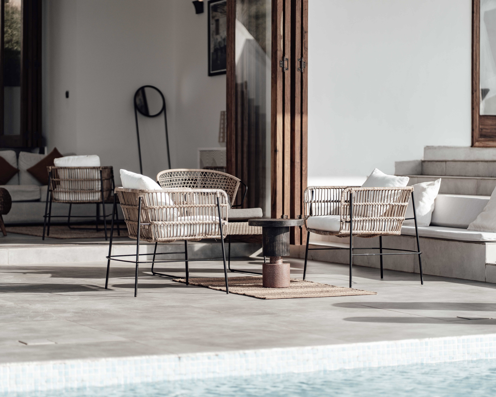
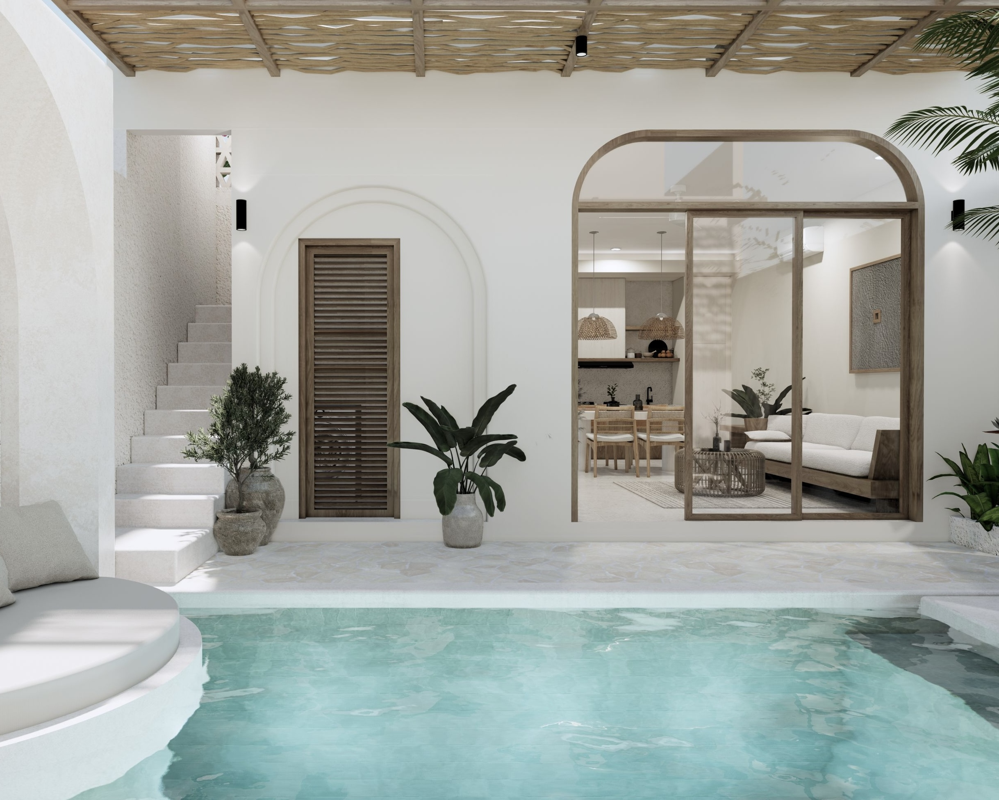

TERRAZA NORTE
A sunlit terrace designed as a seamless extension of the home, blending natural stone, sculptural greenery, and relaxed lounge furniture. The space invites slow afternoons and effortless outdoor living.


A sunlit terrace designed as a seamless extension of the home, blending natural stone, sculptural greenery, and relaxed lounge furniture. The space invites slow afternoons and effortless outdoor living.

Inspired by the changing qualities of natural light, this interior combines organic materials with clean architectural lines. The result is an inviting living space that feels both grounded and timeless.

Rich materials, deep tones, and expressive forms give this living room a distinctive and intimate character. Contrasting textures create a balance between modern sophistication and warmth.

Mediterranean-inspired retreat centered around light,water, and natural textures.

A refined living space built around soft textures, sculptural furniture, and a restrained palette. Every element is carefully curated to create an atmosphere of understated elegance.

An expressive composition of bold silhouettes, tactile materials, and carefully selected art transforms the living room into a personal statement. The design celebrates the relationship between visual identity and everyday experience.